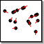

|  |
The Swarm GameBy Sean Luke |
This is a set of swarm behaviors proposed by the Fratelli Theater Group and popularized by Eric Bonabeau and Carl Anderson at IcoSystem. The idea is to guess what certain combinations of individual agent behaviors are likely to cause in "emergent behavior" of the whole system. Each agent first picks two random individuals A and B that are different from one another and neither of which are the agent himself. Then the agents all follow the same behavior. This game has often been played with "real" human swarms. There are five behaviors in this example:
In the Model pane you can change how much each behavior is mixed in to form the final behavior. Some stuff to try: